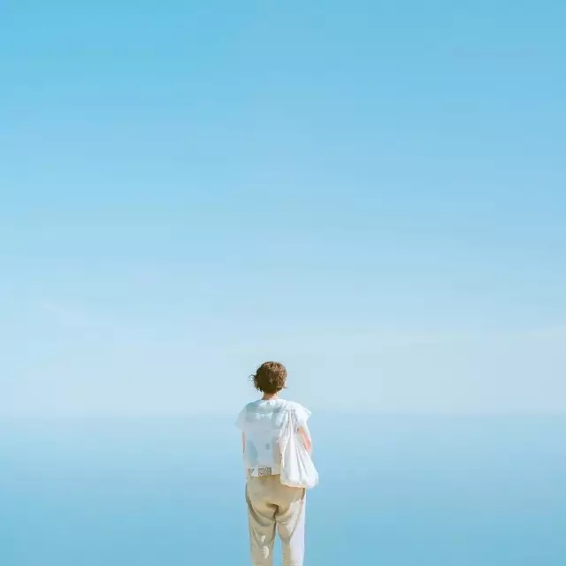
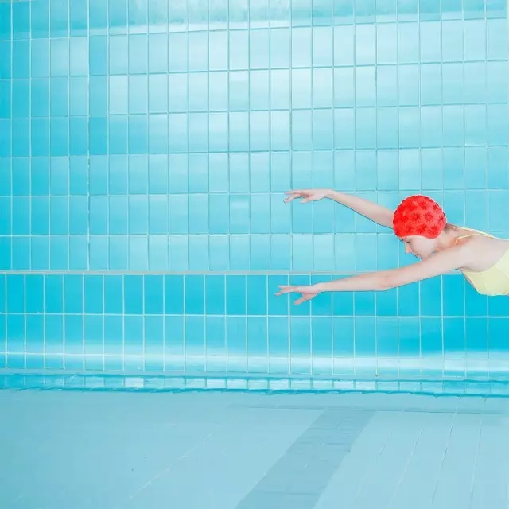

极简主义，顾名思义就是把“简约”做到最最最极致。
近年来，极简主义大行其道，什么极简风家具、极简风服装，极简设计的手机、电脑... 当然还有我们今天要说的极简人像。说极简人像之前我们先来聊一聊什么是极简摄影
我所认为的极简摄影就是整体画面干净简约，没有不必要的元素入境。但就是这看似简单的构图却往往能带给人很惊艳的视觉效果
而极简人像就是在此基础上进行的人像摄影，极简人像一般整体画面简单大气，给人一种简洁优雅上档次的感觉。
如何拍出一张有品位有逼格的极简人像照就是今天的主题,话不多说，开始吧！
在众多极简摄影大师的作品中，最常见到的还是纯色背景，要保持整体画面的干净整洁，纯色的背景最合适不过啦。
我们在拍摄的时候可以选择一面纯色的墙或者背景干净的地方，尽量让背景做到简洁无杂物！
如果实在找不到合适的背景，我们可以用 大海 和 天空 当背景

极简人像摄影虽然不能出现过多的杂物，但是能使画面更有视觉冲击力的线条啊光影啊还是可以有的。
我们在拍摄的过程中可以把人和线条放到同一个画面中去，以此来增加视觉感受

没有线条的话，我们可以用身边的光影、或者台阶之类来代替
另外，生活中有几何图形的场景，比如方形或圆形的门框或窗户，我们也可以很好的利用起来。 把人物放置到几何图形中 去，也会收获很不错的视觉效果
极简人像主打简约，但简约 ≠ 单调！色彩的运用也是一张照片是否出彩的关键点
可以尝试用一些较为强烈的颜色搭配在一起来增加视觉冲击

很多时候我们常常由于天气或者场地等的限制，无法获得令人满意的配色，要是连后期修图也无法拯救一张照片的话，我们不妨试试把照片调成黑白
黑白照不仅能为我们免去色彩搭配的烦恼，更是自带一种高贵冷艳的贵族气质
说到极简人像怎么能忘了剪影呢，剪影拍摄中尽量选择空旷的场地，让画面看起来简约大气

50人觉得很赞！